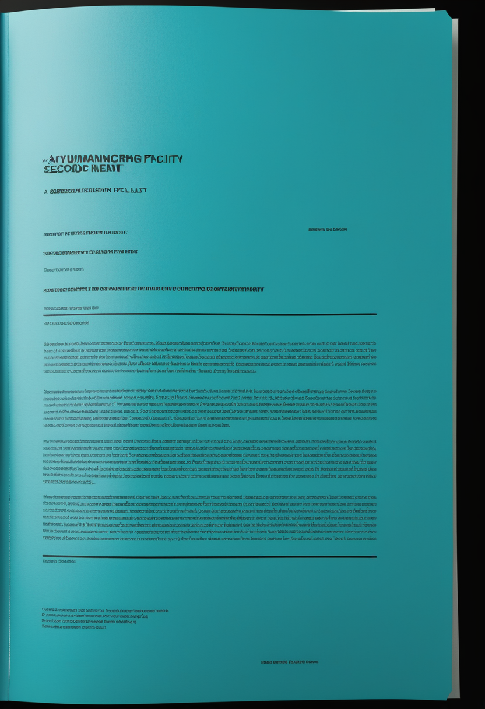
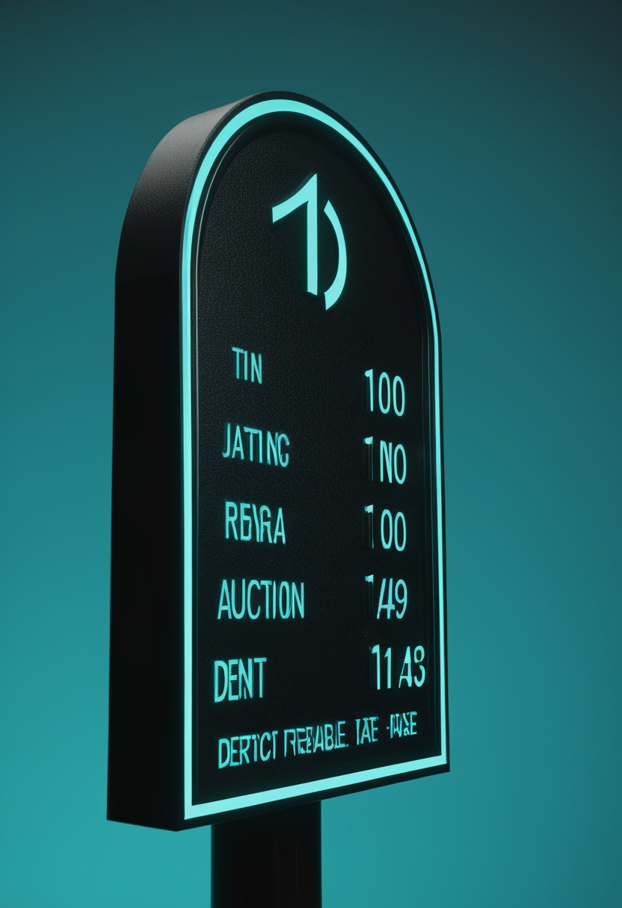

火曜日の便り。DRC(コンゴ民主共和国)のブンディブギョ型エボラは確定3,200例・死者1,405人に達し、1週間でわずか856例増という急加速を見せ、史上2番目の規模だった西アフリカ流行に数日内にも並ぶ見通しとなった。東アジアでは台湾がCOVID-19の新たな流行期入りを宣言し、夏の感染増が各地で報告されている。それでも命の現場では、アピテグロマブが製造体制を整えFDA審査に前進する一方、欧州は施設査察の問題で承認意見が延期となり、既承認薬の普及活動も進む。自由の分野では、Neuralinkの治験参加者が26人に達し英国・カナダ・UAEへ国際展開が加速、Blackrock Neurotechは10年分の触覚回復データを公表した。畏敬の宇宙では、岩石系外惑星として初めてハビタブルゾーンでの大気が検出され、中国・天問2号は小惑星カモオアレワへの近傍観測を開始した。美の章では、デジタルマインドの実現時期を巡る専門家予測と、マインドアップロード研究が「検証」の時代へ移りつつある現状が報告された。
7/27号の続報 ― DRC保健省は7/26付で、ブンディブギョ型エボラの確定例が3,200例、死者1,405人に達したと発表した。1週間前(2,344例)からわずか1週間で856例増と拡大が加速し、2014〜16年の西アフリカ流行に次ぐ史上2番目の規模に数日内にも並ぶと報じられている。震源地イトゥリ州が症例の9割超・死者の8割を占め、5月15日の流行宣言以来、有効なワクチン・治療薬が承認されないままの深刻な状況が続く。WHOは「拡大は続くが安定化の兆しもある」との評価を示している。

Scholar Rock社は、SMA治療薬アピテグロマブの生物製剤承認申請(BLA)について、3月の再提出後、7月時点で2つ目の充填・仕上げ施設を確保するなど製造体制を整え、9月30日のPDUFA(FDA審査結了目標日)に向け準備が順調に進んでいるとした。承認されれば「神経を守る」既存薬に対し「筋肉量を取り戻す」初のSMA治療薬となる。
欧州医薬品委員会(CHMP)によるアピテグロマブの販売承認意見は、製造委託先Catalent Indiana施設(Novo Nordisk傘下)の査察分類待ちのため延期された。米FDAが同施設を再分類すれば年内のCHMP意見が見込まれる一方、再分類がなければ2つ目の施設でEMAとの手続きを進める方針が示されている。同一薬剤で米欧の審査進捗に差が生じている。
Biogenは7月中旬、既存薬Spinraza(ヌシネルセン)の高用量レジメンに関するブランドキャンペーン「Ready for More」を開始した。Novartisも患者支援団体と連携した啓発活動を拡大しており、新薬候補の審査進捗と並行して、既承認薬の普及・最適化に向けた製薬各社の取り組みが活発化している。
新薬候補アピテグロマブは製造体制で前進しつつも欧州の規制手続きに影(米欧の審査進捗差)がさし、その傍らで承認済み薬の高用量化・普及という地道な取り組みも並走している。
業界報道によれば、Neuralinkの脳インプラント臨床試験(四肢麻痺対象のPRIME試験、発話再建を目指すVOICE試験)の参加者数が、今年1月時点の21人から26人へと増加した。英国では現地治験(GB PRIME)に7人が登録、カナダではトロント大学健康ネットワークで最初の国外手術が実施され、UAEでもアブダビ保健局・クリーブランドクリニックと組んだ治験が始動するなど、国際展開が加速している。
Science Translational Medicine誌に掲載された研究で、脊髄損傷患者5人に埋め込まれた皮質内微小刺激(ICMS)電極アレイ(埋込期間2〜10年、延べ27年分)を通じ1億6,800万回の刺激パルスを送達し、重篤な有害事象なく安全に触覚を再現できたと報告された。長期埋込型BCIの安全性を示す最長規模のデータの一つとなる。
侵襲型BCIは臨床規模の拡大(Neuralinkの国際展開)と安全性の実証(Blackrockの10年データ)という二つの軸で、実用化に向けた足場を同時に固めつつある。

DRC保健省は7/26付で、ブンディブギョ型エボラの確定例が3,200例、死者1,405人に達したと発表した。1週間前(2,344例)からわずか1週間で856例増と拡大が加速し、2014〜16年の西アフリカ流行に次ぐ史上2番目の規模に数日内にも並ぶと報じられている。震源地イトゥリ州が症例の9割超・死者の8割を占め、有効なワクチン・治療薬が承認されないまま、WHOは「拡大は続くが安定化の兆しもある」との評価を示している。
台湾CDCは7月中旬、7/12〜18の1週間で受診者数が前週比66.5%増の4,766人に達したとして、新たな流行期に入ったと表明した。5週連続の増加で、中国・香港・韓国・日本・シンガポールでも同様の増加傾向が報告されており、中国では月間症例数が3〜5月の約2万件から6月に7.9万件へ急増(重症例130件)。台湾では季節性インフルエンザとの同時流行によりピークは8月中旬と予測されている。
DRCのエボラは史上2番目の流行規模に数日内にも並ぶ見通しとなる一方、東アジアでは台湾を起点にCOVID-19の夏の流行期入りが広がっており、性質の異なる感染症が同時に公衆衛生システムを試している。
地球から約48光年の赤色矮星を周回するスーパーアース「LHS 1140b」から漏れ出すヘリウムが検出され、ハビタブルゾーン内の岩石惑星として初めて大気の存在が確認された。同惑星は地球の1.73倍の半径・5.6倍の質量を持ち、少なくとも30億年以上大気を保持してきたとみられる。7月17日付Science誌に発表された。
中国国家航天局(CNSA)によると、小惑星探査機「天問2号」は約10億kmの航行を経てカモオアレワ(2016 HO3)に到達し、20km圏まで接近して形状・組成・内部構造の近傍観測を開始した。今後試料採取を行い、2027年末ごろ地球帰還カプセルを投下したのち、次の目標である彗星311P/PanSTARRSへ向かう計画。
系外惑星の大気検出という「見えないものを見る」観測技術と、天問2号の現地近傍観測という「赴いて確かめる」探査が、それぞれ異なるスケールで太陽系内外の理解を前進させている。
専門家予測をまとめた論文「Futures with Digital Minds: Expert Forecasts」では、機械学習・強化学習・大規模言語モデルを用いた認知モデリング技術が2025〜2026年にかけて急速に高度化している一方、意識の転写や人格の保存が実現するとの科学的合意には至っていない現状が示された。
2026年3月にEon Systems社がショウジョウバエ脳(約14万ニューロン)の完全デジタル化と行動再現に成功して以降、業界解説記事は「データ収集」段階から、得られた構造データが本当に機能を再現しているかを確かめる「検証」段階への移行が最大の課題になっていると指摘する。人間の意識転送は依然として30〜40年先というのが科学界の共通認識である。
意識のデジタル化研究は、データを集める段階から、それが本当に機能を再現しているかを問う「検証」の段階へと静かに軸足を移しつつあり、専門家の間でも意識転送の実現時期には慎重な見方が根強い。
2026年7月28日、DRCのエボラは1週間で856例という急拡大を見せ、史上2番目の規模だった西アフリカ流行に数日内にも並ぶ見通しとなった。東アジアでは台湾を起点にCOVID-19の夏の流行期入りが広がり、公衆衛生の前線は複数の方角から試されている。それでも命の現場では、アピテグロマブが製造体制を整えFDA審査に前進する一方、欧州の規制手続きには影がさし、既承認薬の普及活動も静かに積み重なっている。自由の分野では、Neuralinkの国際展開とBlackrockの10年分の安全性データが、埋込み型BCIの足場をそれぞれの角度から固めた。宇宙では、岩石系外惑星が初めて大気を保持していることが確かめられ、天問2号は10億キロの旅の果てに小さな天体への近傍観測を開始した。そして意識のデジタル化を巡る探求は、データを集める時代から、それが本物かを問う「検証」の時代へと、静かに軸足を移しつつある。
では、また明日の朝に。 — JaH